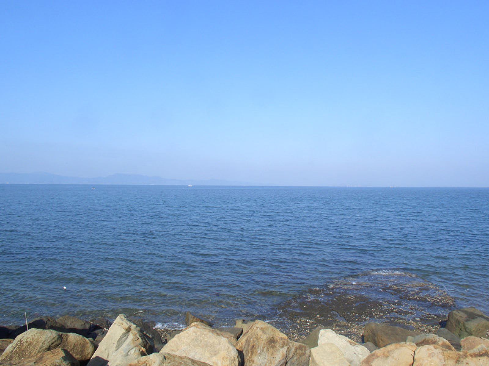
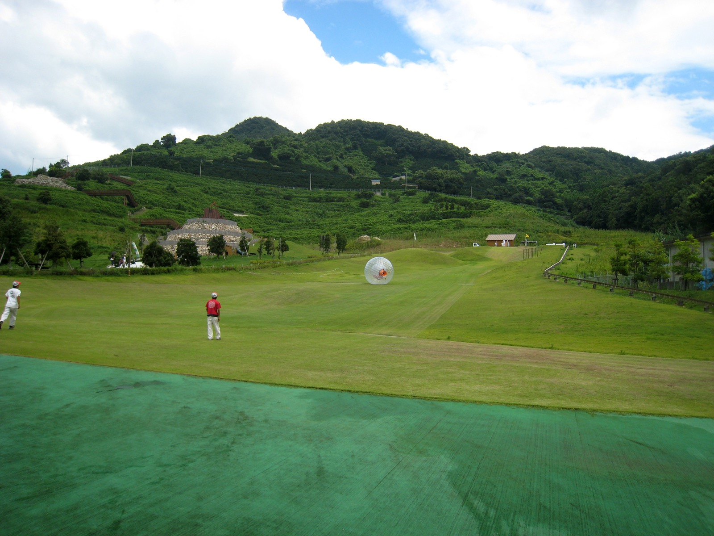

A DAY IN ASHIKITA
こんな働き方、
想像したことありますか？
朝、海から差し込む光で目が覚める。
ランニングしながら漁港に立ち寄って、地元の漁師さんと「おはよう」と挨拶を交わす。
夕方はキャンプ場でSNS用の動画を撮影して、温泉に浸かってから帰る。
「何時から何時まで出勤」という縛りはありません。
この町を、自分のフィールドとして動き回ってください。

不知火海の朝

シーサイドパークの朝

御立岬の空と海